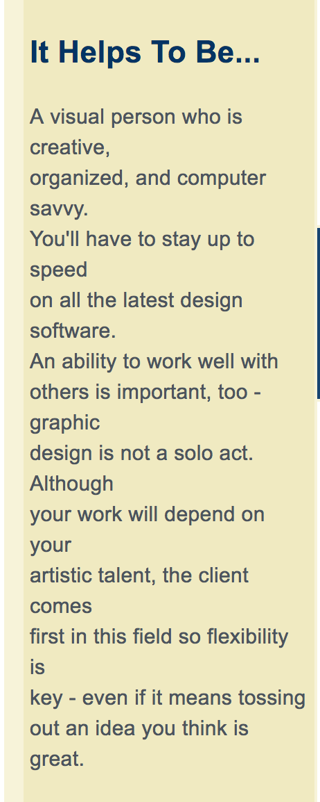
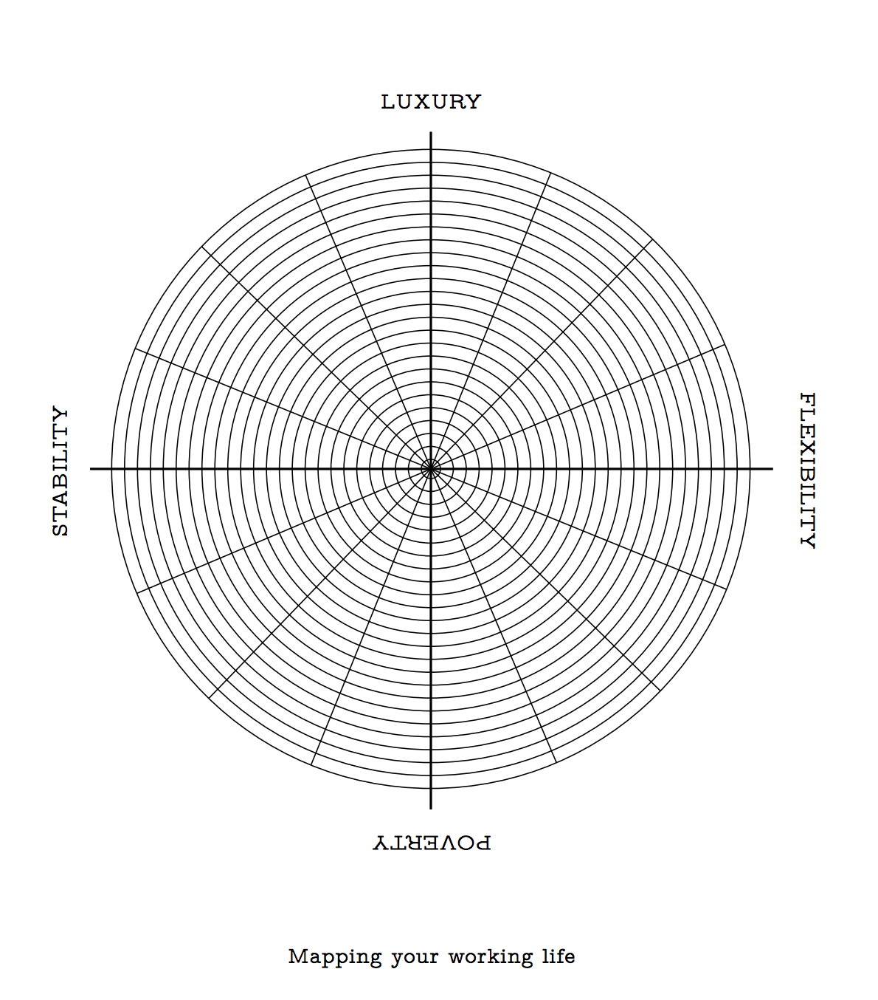
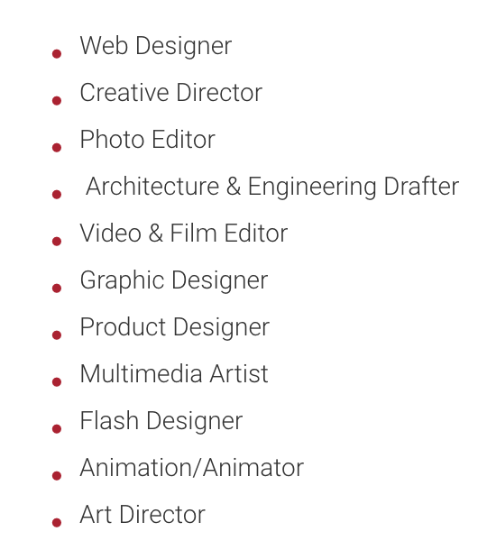
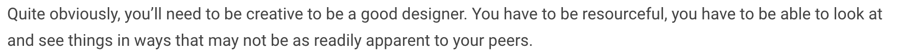
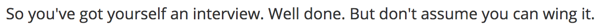
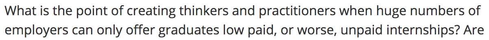

RESET
TINE KJØLSEN PART 1 Tine Det er jo, man kan sige i den analyse og de tanker du gør dig, i forhold til hvad du nu vil, altså den usikkerhed eller den, altså du bevæger dig lidt rundt på en platform her. Mia Præcis. Tine Der tænker jeg jo, at der er rigtig meget godt og hente i at måske, bruge og kigge på den type opgave du har lavet. Organisere den i, lidt lige som en opslagstavle, at du ligesom tematiserer det. Og bygger din, altså hvis du nu tænker at bygge en website op, lidt ligesom et portfolio, digital portfolio, hvad er det for nogle.. måske tendenser som viser sig, når du lægger tingene op. Som du måske ikke kan få øje på, når du bare går rundt og tænker dig om. Det var min første tanke. Mia Det var også, et eller andet sted, det jeg håber jeg kan få ud af det, fordi det er jo også, når man så arbejder med det, så tænker man endnu mere over det.. Man kan ikke nødvendigvis få svarene samlet. Men jeg håber måske, at når jeg skal sætte mig ned og lave det, at det på en eller anden måde går op for mig, eller jaer, jeg ved det ikke helt. Det er sådan, det er også lidt en del af sådan et forvirrende projekt. Tine Ja,ja. Mia Øhm.. men ja, jeg ville egentlig gerne, sådan høre dig lidt mere sådan specifikt, om sån designbranchen, nu til dags, om du kan fortælle, bare sådan generelt, hvad man måske kan forvente, eller hvad man skal være opmærksom på, når man skal ud og finde et job. Tine Altså helt generelt? Mia Ja, helt generelt. Tine På tværs af det hele, vil jeg sige at man skal være rigtig dygtig til noget og så skal man have rigtig godt styr på sine, hvad skal man sige, samarbejdskompetencer, fordi øhm, selvom i arbejder meget gruppearbejde her på stedet, så vil man når man kommer ud på en arbejdsplads som designer skulle forholde sig til nogle præmisser, der bliver opgaverne meget bundet, altså både tidsmæssigt, med at man måske får 24 timer til at aflevere et eller andet, men også nogle rammer, for hvad det er man skal løse. Så jeg tænker at det er rigtig vigtigt, at man er rigtig dygtig, men også at man er i stand til at samarbejde. Og fagligt dygtig, tænker jeg. Ikke sådan, at man skal være super specialist, men som grafiker, skal man jo kunne arbejde med typografi, skrift og layout. Altså om jeg så må sige, enten til digital eller analoge formater. Afhængig af hvad det er for en arbejdsplads man havner på. Mia Og det er vel allesammen nogle kompetencer, det er meningen vi ligesom skal få her. Tine Ja, det vil jeg mene. Vi prøver i hvert fald på at… Mia Er der nogen kompetencer, som du tror, vi på en eller anden måde, ja optjener her på den her uddannelse, som vi måske ikke rigtig selv er klar over, eller som vi tager for givet, når vi skal ud på arbejdsmarkedet? Altså at man måske et eller andet sted, kommer til at undersælge sig selv, eller tænke, sådan: ej det, der job kan jeg ikke, fordi jeg kommer herfra, jeg kan kun tegne eller sån. Tine Ikke, altså umiddelbart vil jeg sige, at det er ikke noget der er indlejret i selve uddannelsen. Men jeg kan opleve, i de generationer vi har i øjeblikket en stor usikkerhed overfor livet. Altså det faglige, professionelle liv efter uddannelsen. Og.. Det kan godt være at jeg selv havde det sådan for mange år siden, men jeg kan ikke rigtig huske det mere. Og måske er det sådan at det er en præmis, at når man er færdig med sin uddannelse og man står der og man skal ud og have sit første arbejde eller sit andet eller tredje arbejde, at man er, usikker på om man skal slå til og hvad man vil med det og om det sjovt og spændende og udfordrende osv. Og der tænker jeg bare, at man er nød til at springe ud i det. Og det arbejder vi med, i stigende grad, at også at arbejde med at i kan præsentere, og pitche og alt mulig andet. Og så er det også en præmis, at når man kommer ud på arbejdsmarkedet, at man på en eller anden måde alligevel starter forfra. Ikke forfra forfra, men forfra med at, finde sig selv i et professionelt arbejdsliv. Mia Jaer. Føler du sådan, at man måske skal give slip nogle ting, af det man ligesom har her ude fra og at man er meget sådan, altså det er meget ens eget arbejde og opgaver og tanker. Man skal ligesom være bedre til at.. Tine Ja, ja, ja, ja, jaer. Fordi du, du vil stå i det der, du har brugt meget tid på dig selv her ik. I 5 år. Og når du kommer der ud på arbejdsmarkedet, kommer du bruge tid på at arbejde sammen med nogle andre mennekser og i for sig også rette ind efter nogle andres krav ik. Og det, eller de præmisser for en eller anden opgave løsning. Mia Så man kommer til, at gå på kompromis. Tine Netop. det skal man jo lære at være i. og kunne ha. ja. Mia Jaer.. Tror du at, altså sådan med jobmuligheder, det sådan lidt sådan en ting, som jeg, altså jeg kender selvfølgelig til de klassiske, art director, illustrator, de der ting, som man jo tænker man kan blive, men forestiller mig bare, at der sikkert også er en meget bredere vifte der ude, som vi slet ikke, egentlig er klar over. Tine Der er mange andre. Man kan være grafisk facilitator. Altså det er jo noget af det nye. Kan man sige, at der mange steder hvor, i den offentlige sektor for eksempel. Hvor man har folk der faciliterer projektprocesser eller afklaringer af løsninger inden for et eller andet felt. Ved at så at sige at tegne løsningerne frem, mens folk arbejder. Det er jo noget en grafiker ville kunne lave. Der er også mange steder, og det er særligt i måske den offentlige sektor, hvor du kan arbejde som konceptudvikler. Det er ikke sikkert at du selv, den der eksekverer koncepterne, men du vil udvikle koncepter for, hvad skal vi sige, ny skiltning til bycykler, eller hvad fanden ved jeg, for Københavns kommune. Mia Så det er mere sådan idegenerering? Tine Ja, ja. Eller konceptudvikling, hvor du altså arbejder, ideen godt langt frem, men ikke nødvendigvis eksekverer den. Mia Nej.. det er i hvert fald bare nogle ting jeg også har tænkt over, fordi at jeg sådan tænker meget over mine muligheder og hvad jeg kan blive. Jeg tænker bare tit, der må være noget mere. Og det finder man jo også ud af. Tine Jaer, for du er jo ikke ligesom færdig. Mia Nej, nej. Tine Fyldt ud, så at sige. Når du går ud herfra. Mia Nej, det er rigtigt. Nej, på nuværende tidspunkt er jeg også sådan, nu tager jeg et års pause for ligesom at se, øhm hvilken retning jeg synes jeg skal gå og så..
TINE KJØLSEN PART 2 Tine Så du tager, et års studie pause og arbejder? Mia Øhmm.. jeg har ikke helt fundet ud af det endnu.. altså jeg vil gerne finde noget praktik måske. Tine Jaer, altså jeg synes det ville være super godt, hvis du fik dig et studiejob og jeg spammer jer med studiejobs i øjeblikket. Og praktikpladser. Det er bare med at hapse nogle af dem. Fordi det der med, og have et studiejob eller, og eller have praktik er jo et virkelig vigtigt element i din uddannelse, i forhold til at afklare hvad du vil. Mia Jaer, jamen det, jeg tror også bare jeg skal prøve nogle ting af, se hvad der fungerer øhmm.. ja. hvad havde jeg ellers. mmm… (stilhed..) Jo så var der noget i forhold til om, vi snakkede om kompetencer før, men har du en fornemmelse af, at der er nogle arbejdsgivere derude, som mangler nogle kompetencer fra os, eller savner noget vi måske burde kunne, eller som måske ville gavne os, hvis vi også havde det med i baggagen. Tine Altså, det bliver jeg nok nødt til, at sige ja til. Men det er jo fordi, at der jo kun så og så mange timer i døgnet og i virkeligheden hvis man kigger på hvordan uddannelsen har flyttet sig igennem de sidste 20 år. Så har i jo meget mindre tegning i dag, end man havde for 20 år siden. Og det at kunne tegne, altså ikke bare tegne det man ser, men også at kunne tegne det man forestiller sig til en koncept udvikling eller ide skitse udvikling. Det er noget som i ikke alle sammen kan helt på det niveau, som jeg i og for sig godt kunne tænke mig at i kunne. Men det ville kræve at i enten var hardcore på tegneuddannelsen i et eller to år inden i kom her. Hele tiden, som i hver da, 24/7 ik? Eller at vi havde en helt anden prioritering i jeres undervisning. Og det er den der, balance gang, som altid vil være til stede på en uddannelse institution i forhold til hvad vi vurderer markedet udbeder sig. Hos jer. Mia Hos os. Tine Og hvad vi mener i skal kunne. Altså det er jo sådan en forhandling kan du sige, der foregår over tid hvor ting flytter sig, nogle parametre. Mia Nu har vi jo brugt ret meget tid på også, at komme mere ind i business strategy. Også og sådan, det må jo næsten også være noget som de sådan efterspørger. Tine Det gør de også. Men de, de siger jo vores, når vi mødes med vores aftagere panel og dialogpaneler. Så er der jo groft sagt, den ene halvdel, der sidder og siger at de skal kraftædme kunne tegne og de skal kunne tegne så de kan ideudvikle osv. Og den anden halvdel siger, jamen de skal jo kunne sælge deres idéer, altså. Så det er hele tiden sådan en forhandling. Og i så er en slags prøvekaniner. Mia Haha.. Ja.. Er der sådan.. øhmm. Er der nogle tydelig diskurs for hvad folk ender med at lave, efter de er færdig på kandidaten er det meget selvstændige folk bliver, eller er det meget bredt det hele, har du nogen sådan ide om det? Tine Jeg vil sige at der er en stor procentdel der går ud og bliver ansat. På større eller mindre bureauer. Og ofte er de jo allerede i gang, kan man sige ansættelsesmæssigt, inden de bliver færdige. Sådan med studiejobs. Mia Så de fortsætter.. Tine Ja på en måde ikke. Og det er også en skide god måde at komme ind på arbejdsmarkedet. Øhmm. Så er der, jeg vil sige, en tendens til at folk skifter. I er jo en generation, der er meget mere troløse, end den generation jeg selv kommer fra, hvor man traditionelt har længere ansættelsesforhold. Nu om dage, der er man måske i et par år, og så skifter man, efter et halvt eller 2 år, så skifter man arbejdsplads. Man pendler på en måde, eller flyder rundt på arbejdsmarkedet. Mia Men så det er, det er mest på private bureauer og sådan lidt mere kunstneriske steder eller er det også.. Tine Det kan være meget kunstneriske steder, det kan være mere hard core business orienteret steder, det kan være store og små tegnestuer, det kan også være arkitekt tegnestuer, det kan også være offentlige arbejdpladser, ministerier, organisationer, interesseorganisationer, vi kan snakke om alzheimer foreningen, mellemfolkeligsamvirke eller et eller andet i den retning. Og så er der, jeg vil tro måske i hvert fald en tredjedel der går ud og enten starter deres egen virksomhed op eller starter op i en gruppe. Vi har også lavet nogle designbureauer her i tidernes løb. Mia Som er starter op her på skolen? Tine Som er startet op her ja. Mia Nåh. det er meget interessant. Tine Dem er der nogle stykker af. Mia Altså hvor skolen ligesom har været indenover eller er det bare sådan eleverne selv? Tine Baum und Pferdgarden er født på den her skole. Hvad hedder de.. de der type, de hedder e-types er født her på stedet. Osv. Sådan kan vi blive ved… Mia Så det kommer også bare lidt hen af vejen.. Tine Så der er flere steder det går hen. Altså man kan jo også blive ansat, på eksperimentariet for eksempel, i deres grafiske afdeling eller national museets kommunikationsafdeling eller.. der er mange muligheder. Mia Der er mange muligheder. Tine Men jeg anbefaler jer at gå ud og få et arbejde, rigtig meget. Mia Og det bare, altså jeg tror også.. Tine Studierelevant arbejde. Mia Og jeg ved ikke, om det er bare mig, eller om det er sådan en generel ting at man er sådan ahh, jeg ved ikke lige om jeg gider at arbejde indenfor det offentlige.. er det bare bedre at kaste sig ud i et eller andet? Så længe det er studierelevant? Selvom man lige tænker, ej det er ikke kunstnerisk nok for mig, eller.. Tine Ja, fordi man kan ligesom sige, det du kan jo komme med, dine fordømme kan jo blive udfordret. Du kan jo komme til at sidde der og tænke: hold kæft hvor er det spændende det her. Hvor er det sjovt at lave noget der er får betydning for så mange flere mennekser, end lige netop dem der køber den, den er pakke et eller andet ik? Mia Jaer, jaer.
TINE KJØLSEN PART 3 Tine Og så kan man sige. Den der erfaring, arbejdserfaring er jo vigtig også både i forhold til hvad der er fagligt spændende, men også for dig at vende dig til at sige agtig. Mia Føler du, at det er en ting, at elever måske har lidt for høje sådan forventinger til, eller hvad kan man sige for specifikke krav til deres fremtidige jobs. Tine Ja, ja. Mia Og i forhold til, hvad der er til rådighed? Tine Ja. Og der kan også være, hvis man nu skulle være meget meget uartig, en slags forkælelse. I forhold til hvad det vil sige, som som.. Men jeg synes ikke det er generelt, men der kan godt være nogle lommer eller eksempler på at der er nogen, der tænker ej nej nej, det jeg skal kun lave det her lille stykke herhenne af. Der er meget andet. Og så kan man jo, så er der jo også nogen der går ud og underviser. Jeppe Pendrum, der tog afgang her for et par år siden nu, på viskom, han laver, han er freelancer, og har også sin virksomhed, men så underviser han også. Tingene kan jo skrues sammen på mange måder. Mia Man kan lave lidt ved siden af hinanden også. Og det er selvfølgelig også vigtigt at huske, at der ikke er nogen der udelukker det andet. Tine Nej ikke nødvendigvis. Og det kan også være man starter et sted og så er man der, og så ender man herover og tænker, her bliver jeg et stykke tid for her er fedt. Det spiller det her. Mia Jaer, ja.. Du siger mange gode ting. Tine Det var godt. Mia Øhm.. Jeg havde bare en, et par sidste ting. Øhmm.. det var sådan mere, måske mere i forhold til designbranchen. Jeg tænker sådan, når man som designer. Om du tror det er vigtigt at man har en eller anden bestemt, sådan.. om der er nogle krav til ens personlighed, at man er sådan meget selvsikker eller åh.. eller at man er karakteristisk for at man ligesom kan stråle igennem og blive anerkendt. Altså at man har en eller anden særlig.. Er det nogen du sådan oplever.. Tine Altså vi kan jo godt, tror jeg, blive enige om at vi lever jo i en verden hvor man indimellem skal råbe meget højt for overhovedet blive hørt. Øh, og det er jo klart at hvis du skal ud og søge et arbejde, så skal du jo, du skal jo være i stand til at og sælge dig selv så meget over på den anden side af bordet at vedkomne eller de mennekser du sidder til samtale med ansætter dig. Men når det er sagt, så vil jeg sige at selvsikkerhed og selvstændighed er jo to ting som ikke udelukker hinanden og når du skal ud og arbejde, så skal du kunne agere selvstændigt, indenfor de der rammer du får udstukket. Og det vil sige, der, der vil jeg så parre selvsikkerheden med nysgerrighed, øhm.. hvad skal vi sige.. kvalitetssans, timing og forståelse af hvad det er for en opgave du er blevet sat til at løse. Og ikke nødvendigvis at holde på din egen ret, hvis du kan forstå hvad jeg mener. Mia ja.. jeg tror det er fordi jeg tænker meget over, sådan, altså de sådan grafiske designere , de store, anerkendte grafisk designere, de er som regel meget.. men de er måske også bare noget man bliver anerkendt, ligesom får den her udståling af at man er mega selvsikker, og den her lidt specielle karakter, som gør at man er noget særlig. Tine Nogen har den der.. Og nogen har også rigtig meget tendens til som en eller tarzan, og slå sig på brystet og råbe jeg er den største, elefant i buret. Og det bliver man jo ikke en bedre designer af. Og nogen gange.. Og så er der nogen der råber højere, end hvad de egentlig er berrettiget til, kan man sige det på den måde.. Mia Ja, ja.. Det er også, for at nå til toppen, er det vel også mange forskellige ting der spiller ind. Som held og.. Tine Jo, og timing. Sans for at ramme. Held er jo altså ikke helt ueffen… Mia Altså at man møder de rigtige mennekser .. Tine På det rigtige tidspunkt. Men også at du er lydhør overfor de muligheder der dukker op. Mia Ja. Tine Øhm.. og ikke afviser dem på forhånd. Mia Jaer. Så mere åben egentlig. Tine Ja, nysgerrig. Mia Nysgerrig. jaer. Nå men som det sidste, øhm.. Bare hvis.. nu har du jo sagt mange gode ting, men hvis du ligesom skulle pointere et godt råd, som jeg kunne tage med videre, men den sådan, det sted jeg er lige nu, hvad kunne det så være? Tine Jeg tror jeg vil sige til dig at jeg synes at det er meget meget værdifuldt og være nysgerrig på hvad det er livet, det der grafiker liv, byder på af muligheder, og gå ud og prøv dem af. Du skal ikke være bange. For at fejle eller ikke at slå til, eller et eller andet, fordi det er alt sammen erfaringer som du kan bruge til noget på et tidspunkt.
ELIAS WERNER PART 1 Mia Øhm.. altså det er lidt i forlængelse med det spørgesskema jeg også havde lavet.. Elias Jaer. Mia Hvor jeg også spørger lidt ind til sån, ja designbranchen generelt, det er jo så mest i København ik. Elias Jo. Mia Øhm.. hvad man sån kan forvente og også mere hvilke muligheder man har med den uddannelse som vi får her. Elias Ja. Mia Øhm.. fordi, jeg ved ik. Jeg har lidt sån, det er sån en meget generelt ting at folk måske er lidt mere sån, eller har nogle specifikke rammer for om de vil være: illustrator, art directors, eller, åh.. hvad hedder det.. lave type og der er de her sån meget specielle retninger.. Elias Kasser. Mia Præcis, men at jeg også bare forestiller mig, eller jeg ved, at der må findes flere muligheder. Øhmm.. Elias Jaer. Mia Og hvad de muligheder er? .. Elias Ja, det er selvfølgelig.. Det er et godt spørgsmål. Men jeg tror i virkeligheden. Altså ideelt set tænker jeg, det vi gerne vil med den bachelor uddannelse er, hvad hedder det, er ligesom at få trukket jer rundt til nogle forskellige aspekter af hvad man kan komme til at arbejde med indenfor visuelt design primært ik. Mia Jo. Elias Så der stadig er den faglighed med. Jeg tror det ene svar jeg svar jeg skrev, var det der med, hvad det vigtigeste som designer, det er jo vigtigt, alt det der med at netværke og kunne præsentere sig så, det er jo også vigtigt, som designer ik. Og skal man ligesom få ting igennem, at kunne forstå sine kunder, der har et mere kommercielt sigt og forstå hvem de er. For hvis de ikke er med ideen, så kommer det bare ikke nogen steder hen vel. Øh. Så det er bare det vi også prøver med designmetoder, at man får forskellige måder at tale med folk på og forskellige måder at forstå forskellige kunder ik.. Øh, og med det.. bare lige for at komme tilbage til spørgsmålet så, hvad hedder det, så ideelt set er det jo virkeligheden at den her bachelor gerne skulle forbedrede jer til at: Okay, der er forskellige retninger man kan gå. Man kan skabe værdi på en kunstnerisk måde eller hvordan skaber jeg værdi ik? Eller hvordan kan jeg gå ud og stille spørgsmål på en kunstnerisk måde til noget kommercielt og hjælpe folk med det. Øhm. Men den er jo ikke tænkt sådan, at i ligesom skal blive en bestemt profil. Tværtimod at det gerne skulle give jer nogle forskellige retninger, som i så selv studerer videre og sætter sammen på en måde, som i synes er interessant og relevant.. at beskæftige jer med. Øhm.. Og og så altså et helt overordnet kort svar er jo så, hvis i kan gøre det, så er der et job til jer. Mia Mhmm. Elias For så har du… Hvis du ligesom ved at du er relevant for andre. Så spørger du så selvfølgelig, hvad synes de så er relevant ude på bureauerne? Hvad er det for nogle typer er der der ik. Og der tror jeg, jeg svarede i det sidste spørgsmål, altså det jeg ser, og det er jo bare sådan, det er at du skal være god til noget. Det nytter ikke noget.. altså jeg synes der er nogle træk herude, fra nogle steder i ledelsen for at man ligesom skal kunne lidt af hvert og det er også rigtig nok på en måde, at du, hvad det nu hedder, det er også, det er heller ikke sundt at være sådan helt indsporet kun på en ting.. Mia Nej.. Elias Men men, det er godt at være god, rigtig god til noget, og så måske være sådan lidt bred, bred i sit udsyn. Øhm.. Fordi altsåå, altså det det tit, det er jo tit, med mindre man sidder som en-mands-pers..eller altså hvad hedder det, så får du nogle roller, altså såå i de der set-up. At du fx den der er god til at lave lay-outet eller den der god til at få det op på web altså ikke. Det betyder ikke at man ikke kan løfte begge ting, men fx hvis man nu er god til noget digitalt eller hvis du nu er god til strategi, så er det måske ikke dig der laver web, fordi der er nogen der bedre til at implementere det, til de der sammensætninger ik. Men det betyder jo ikke at du ikke skal vide noget om det, men men men, hvis man kun er halvbagt på alle områder, så er det bare ikke sådan.. i hvert fald når jeg ser rundt, så er det ikke lækkert.. fordi hvorfor, vi har en der er bedre til web, hvorfor skulle du så lave web. Mia Jaer. Elias Vi har en der er bedre til at sætte ting op, hvorfor skulle du gøre det, vi har en der er bedre til at illustrere, hvorfor skulle det så være dig, der laver illustrationer.. forstå mig ret ikk. Mia Jaja. Elias Så hvad det nu hedder, så det er lidt det.. Jeg tror stadig på den der, at man er rigtig god til noget.. Mia Så de der kasser er stadig vigtige et eller andet sted? Eller sån.. Elias Ja, det er de jo, for man kan jo tænke på altså, der er jo, der er jo.. det synes jeg, de er væsentlig i forhold til, at det ville være naturlig at man et eller andet sted.. det kan jo godt være du er heldig kommer et eller andet sted hen hvor man laver tingene på en anden måde.. men det er hvertfald ikke den virkelighed jeg oplever. Mia Nej.. Elias Men det kommer jo selvfølgelig også an på hvilken virkelighed man skaber. Vil du ud og ansættes, eller vil du selv ud og lave noget. Fordi du synes.. Det er jo også.. man kan sige det er jo også det, det handler om.. eller, vil du især gerne være på det strategiske plan eller vil du.. hvad, hvad er det du gerne vil ud og gøre. Det er i virkeligheden også gerne det der skulle hjælpe dig med denne uddannelse er, at sige: jamen hvad vil jeg med det her? I stedet for hvad vil andre med mig? Øhm.. Ideelt set og det er gerne den, kan man sige i forhold til mere tekniske grafiske uddannelser, hvor man bare bliver uddannet til blive ansat.. Mia Jaja.. Elias Altså skulle det være meget holdbart, skulle du jo på sigt, gerne være den der ender med at ansætte andre.. Mia (Latter) Elias Altså forstår du hvad jeg mener.. Mia Jaja. Altså at få sat en eller anden.. Men det er jo selvfølgelig en meget vild ambition når folk der lige er kommet ud af en skole og det er jo selvfølgelig ikke sådan det fungerer.. Men det er i hvert fald gerne det mindset man skulle komme ud med.. Øh.. Mia Men hvad så hvis man, ikke sådan rigtig føler sig indenfor en kasse. Er det noget der sån kommer med tiden eller skal man helst vide det.. Elias Andre skal nok finde ud af at sætte dig i dem så.. Altså jeg kom også, jeg kom ud fra arkitektskolen med primært at jeg gerne ville lave noget skriftdesign, men jeg også på meget sådan wayfinding og visuelt identiteter og sådan noget ik.. Og så arbejde jeg på Kontrapunkt, hvor jeg faktisk primært arbejdede, altså jeg sad også og lavede identiteter og sådan noget, men primært var det skrift. Og så bliver man langsomt malet op i det hjørne. Så det man laver.. det bliver jo meget defineret. En ting er hvad du laver her på skolen, noget andet er, du bliver rigtig meget defineret af hvilke kunder du får nå du kommer ud i den anden ende. Det er det der kommer til at tegne det. Fordi når: “du har lavet det for den, kan du ikke også lave noget lignende for os, ala” Det er sådanne tinge der griber om sig tit ik.. Mia Så man planlægger det ikke altid selv. Elias Nej, nej, man kan jo sige, det er jo meget tilfældigt, man kan jo også sige det der med. Hvor du bliver ansat.. Jamen altså har de overhovedet brug for nogen, også bliver du måske ansat et andet sted, hvor det måske ikke er det du havde forventet, men så.. så kommer du til at lave den type opgave, og det er så den type opgave der kommer i dit portefolio, så er det, det du ligesom har at vise frem. Altså forstå mig ret, det er sådan en veksling mellem.. man kan selvfølgelig godt opsøge det og man kan også godt sige nej til ting, men det er spørgsmålet hvor kontrolerende vil du være i forhold til det. Så du bliver jo meget formet af også af hvad for nogle kunder du får.. Mia Men så er det også noget, det måske først skal komme, når man er ude og søge jobs eller sån.. fordi det er i hvert fald sådan jeg har det lige nu, at jeg ikke ved hvilken kasse jeg hører til og så ved jeg måske ikke rigtig hvilken retning jeg skal gå eller hvilke jobs jeg skal søge eller også så, hvem vil have mig, fordi jeg ikke selv ved hvad jeg kan tilbyde.. Elias Jamen, det er det. Mia Ehm.. men men ja. det ved jeg ikke, om det bare handler om, at man kaste sig ud i et eller andet og se om.. Elias Jeg synes det er en blanding ik.. lidt altså.. både at man har nogle interesser og så også må se hvad der kommer, men altså du skal selvfølgelig.. det er jo meget individuelt kan man sige af afvejning. eller hvis man bare nu kigger på.. jeg synes jo at kontrapunkt er enormt dårligt, både fordi de jo er fanget i at de har lavet nogle store opgaver, som fx Danske Bank og sådan noget.. i hvert fald den gang jeg sad derinde, jeg sad derinde 10 år efter, så var det tit at kunden spurgte, nå men kan vi ikke bare få noget der ligner Danske Bank agtigt ik.. Mia (Latter) Elias Så altså folk bliver fanget i deres successer. Altså at ligesom så, er det, det kunderne spørger om: kan vi ikke få noget derhen af ik. Øhm.. hvor fx, modsat se sådan nogle som hvass og hannibal, de har meget deres egen stil, det er ligesom det de sælger. Mia Jaer. Elias Det sælger så en stil, øh.. også og det er jo to forskellige måder at gøre det på. hvad kan man sige, hvor kontrapunkt er mere : løb efter kunden og deres ønsker, mens de næsten bare sælger en stil: vi laver det her, og det synes nogen er fedt og så køber de det. Øh.. så det er to forskellige måder, hvor man bliver fanget i en stil eller et ønske. Og så kan man være meget mere.. Altså det det det, det er jo en meget individuelt afregning, når man kommer ud, hvor meget vil man bare facilitere andre, synes det er fedt. Mia Jaer. Elias Det er fint nu laver jeg noget helt andet her, fordi det er det de gerne vil have. Eller hvor meget.. altså jeg synes, jeg laver ret meget blandet ting, men jeg har hele tiden sådan noget med, der er ting jeg ikke gør. Jeg arbejder ikke gratis og hvis der ikke er en ordentlig pris for tingene, så gider jeg ikke at gøre det. Mia Mh.mh. Elias Og jeg gider ikke at gøre ting, som jeg synes er helt håbløst æstetisk. Altså hvis de kommer med en eller anden skitse, og det ser dårligt ud, jeg vil ligesom gerne sikre at kvaliteten er ok. og hvis det ikke kan det, så gør jeg det ikke… eller kun hvis der er mange penge i det.. (latter) forstå mig ret. Mia (Latter) Elias Men, men det er ikke sådan at jeg har et udtryk andet end at jeg har sådan set, at jeg prøver så vidt muligt gøre tingene, altså gøre verden lidt gladere og se på. Altså jeg hader den der helt stramme, du ved sådan ehh. hvor design bliver sådan en spændetrøje man lægger ned over ting ik. Men så så, der kan man have sin egen personlige ting, og så synes man det er rigtig dejligt når man ligesom har fået noget med i det. andre gange så får man ikke så meget med..så er det bare en opgave ik.. Mia Jaer. Så, man som designer danner ligesom også sine egen sån regelsæt for hvad, hvilke ting.. man sån..
ELIAS WERNER PART 2 Elias Ja, hvad man vil ik og ligesom være med til. og det kan man selvfølgelig sige der, det er jo, øhmm. folk har det forskelligt med det. Mia Ja. Elias Altså nu er jeg måske også i en anden situation fordi jeg også har tre unger, så du ved tid er virkelig virkelig noget der bare er presset ik. men når jeg får sådan, altså der er tit dem der siger: “ej men kan du ikke bare tage det halve i timen? og så er det til gengæld rigtig mange timer.” Men altså hvis jeg ligesom kan lave det samme på den halve tid, hvorfor fanden skulle jeg så sidde og lave det her.. altså, du ved forstå mig ret. Mia (Latter)Mhm. Elias Altså det er jo ligesom, så vil jeg hellere måske være sammen med mine unger, med mindre jeg virkelig er presset på pengepungen ik. Mia Ja. Elias Så det er sådan.. jeg er jo ikke interesseret i at arbejde meget, jeg er interesseret i at tjene meget, altså (Latter) forstå mig ret. Mia (Latter) jaja. Elias Men det kan jo også være sådan en afregning, som hvis man er ny og man gerne vil ud og gøre sig.. altså for mig, jeg reklamerer ikke for mig selv, jeg taler kun ud fra min egen, og folk har jo forskellige måder at gøre det på ik. jeg reklamerer ikke så meget for mig selv. jeg tænker at det bedste jeg kan gøre er bare at gøre mine opgaver, gøre dem så folk er så glade, gøre det på tid og gøre det ordentlig ik. Og levere en god løsning og hvis kvaliteten er høj, så skal de nok fortælle det videre til andre og sådan noget ik. Så ligesom give en god oplevelse på den måde. Øhm.. og der kan en god oplevelse godt være det der med, også at have en vis integritet, og være sådan: det kan godt være det, men det bliver ikke godt, altså prøv lige at høre efter hvad jeg siger her, og prøve at insistere på fagligheden. Mia Jaer. Elias Øhm.. og så. Mia Det er vel også noget der kommer med erfaring, at man bygger de her ligesom rammer for hvad man vil og hvad man ikke vil og.. Elias Det er jo det. Der er så mange ting, og du skal heller ikke være blind for.. altså bare det der med, at jeg har arbejdet på kontrapunkt, det er noget jeg bruger stadigvæk når jeg sådan skriver ting rundt, fordi det sådan, okay, på de er store bureauer ik, der er rigtig mange kunder derude, det kommer jo også an på, hvilke kunder, men der er rigtig mange kunder, de har ikke en skid forstand på design, altså det de vælger efter, de køber kendte mærker eller de store bureauer fordi det er der alle andre køber og så er man ligesom homesafe ik. i forhold til en eller ledelse, der nå okay: jeg købte det her bureau, de plejer jo altid og levere og se hvor mange priser de har vundet også sådan noget ik. Det er sådan det rigtig meget fungerer fra kundensside. Har de vundet priser? bum bum bum ik. Så hvis man ligesom kan få det der, ligesom autoritetsstempel, som fx at have været ansat på et bureau eller sådan noget ik. Mia Jaer. Elias Det kan bare.. det det kan måske også bruges sådan lidt strategisk. Så så så, hvis man ligesom tænker på den måde: okay de her skal have tillid til at den opgave bliver løst, hvis de kigger på mit portefolio, så ved de ikke.. de kan simpelthen ikke se forskel på godt eller dårligt, men de kan se jeg har været ansat der og det er nok godt. altså du ved, sådan kan man jo.. Mia Ej, men det er meget interessant. Elias Ja, så det er nogen gange det der med, hvad der kvalificerer en, er nogen gange. Et helt andet sådan ret absurd eksempel på hvad der sådan kan kvalificere. Det var min svigerfar han er partner i et landskabssarkitekt firma, hvor han har siddet i, der har han siddet i det der, hvad hedder det, kvalificeringsudvalg, hvor der ligesom skulle kvalificeres hvilke folk der skulle inviteres med til pitchen, øhm, og ligesom vurdere i det. Og du ved når sådan noget kommer ud, altså så har de tit sådan noget udvalgsmateriale på nogle større opgaver, og så siger man: nå.. nå ja, men øhm kreativløsning det tæller 30%, øhmm økonomi tæller 20%, referencer, altså hvor mange har man løst lignende opgaver før, tæller måske også 20% og så er der et eller andet, andet du ik. Altså, et eller andet, sådan nogle skaler som de sidder måler på, og så bare krydser af. Og der havde de så siddet med en eller anden, hvor der var to forskellige kadidater, hvor den ene havde et større projekt ala lignende, hvor det var et sygehus, med alt mulig spændende, og den anden havde lavet to parkeringspladser, og det var den anden der vandt, fordi de havde havde to projekter i et. Og det er bare sådan lidt, prøv at se omfanget at den her opgave, det er jo meget meget større, det her er jo bare to parkeringspladser også sådan ik. Men nej der er to og det er bare helt bureaukratisk, den der måde det bliver valgt på ik. Og det er bare for at sige, at det nogen gange på kunden side, er der bare, der, folk de tænker slet ikke.. altså vores succesparametre er jo det vi ligesom kan se som kvalitet i ting er ikke det samme. de kører efter nogle helt andre regneark ik. Mia Jaer.. Elias Og det er også.. Mia Meget overfladisk. Elias Ja, og det er jo ligesom, det det vi ligesom gerne vil ind i, eller i hvert fald så i bare er klar over, at sådan er det.. nogen steder og der er selvfølgelig også andre kunder, som kulturkunder, som måske er sådan nogle som er.. men de kan så svære at rykke på andre steder, de vil bare alle sammen være op på (?) eller sådan noget ik. Det er jo ligesom grundlæggende, så så, så.. men i hvert fald ligesom at forstå at at, hvad vi tænker kvalitet ofte, hvordan vi er skolet, hvordan vi ser også selv, det er ikke nødvendigvis sådan andre ser os. Jeg tror også der sådan en meget stor forforståelse af, at designere bare er sådan nogle der sidder og laver form. Så alt det andet strategiske og indtægtsmæssige, som vi også prøver at lære herude, det ligger hos nogle andre, inden vi overhovedet bliver koblet på, ofte på en opgave ik.. Mia Mhm.. Elias Øhm. så. Mia Men det er alligevel noget de gerne vil have, at man kan eller ligesom.. Elias Jojo. Mia Har en idé om. Elias Og det er jo også det.. det er jo også lidt svært at sige, hvad med ude på bureauerne. Fordi det kommer også an på hvor stort bureauet er. Hvor brede opgaver du kommer til at lave, og bare arbejdskulturen ik. Var du med hos 15nul8? i New York? Mia Ehm.. hvem af dem, var det ? Elias Det var det danske bureau. I New York. Mia Nej, jeg var hos Hello Monday. Elias Nej, undskyld, det var Hello Monday, ja selvfølgelig. På Hello Monday, jaja. Der havde de jo sådan, en meget meget flad struktur. Mia Ja. Elias I deres måde og arbejde på. Og det er ikke det samme. Altså hos kontrapunkt, der var det meget det strategiske arbejde, det var ikke så meget designere. Jeg fik i hvert fald ikke det indtryk og det har jeg stadig, når jeg taler med folk. Det strategiske arbejde lå i høj grad hos nogen projektledere. Som inden er ude og tale med kunden og så kommer de tilbage deres gennemtyggede feedback til designerne og sådan noget ik. Der var det meget mere sådan lavdelt. Mia Det har en helt sådan fødekæde det skal igennem. Elias Jaer, og der skal du virkelig kæmpe for ligesom at sandsynliggøre at du kan lave strategi og sådan noget. Hvis det er er det man gerne vil ik. Det er ikke for at sige, det ikke er noget der er relevant derude, det er jo mega relevant, også hvis du som mindre person ik. Mia Men der vil de måske have nogen, med en anden uddannelse end den vi får her. Elias Ja, men det er det.. Nej ikke nødvendigvis, jeg tror bare du skal sandsynliggøre at du kan det. Øhm. at du kan tale med dem ik. Og jeg ved ikke.. jeg kan ikke rigtig finde ud af, for der ligger også en helt masse strategiske ting på de der fællesfag. Jeg kan ikke finde ud af, hvor meget man egentlig bliver i stand til at tale med CBSere og sådan noget, på de fag eller hvad der ligesom ligger der ik. Men det er jo ligesom, dem fra CBS de har et lingo og vi har et andet. Og det er jo og få det til at mødes og sådan noget ik. Og med den forforståelse der er af designere: det kan godt være du siger du kan strategi, men du sidder bare og leger med legoklodser. Mia (Latter) Elias Så er det jo bare svært at bryde igennem ik.. og ligesom at få ændret den opfattelse. Mia Jaer.. Elias Men det er også meget. Det er mega forskelligt, altså det er sådan noget. Jeg synes det er forskelligt fra opgave til opgave med hvad du ligesom. Det er meget tit man skal kæmpe. Jeg sidder lige med en opgave, det har været så utrolig sindssygt. Det er nok også det mest vanvittige.. det har taget et helt år og forhandle kontrakten. Det har virkelig bare trukket tænder ud. Mia Shit. Elias Det er kommunen, hvor jeg laver noget wayfinding og skiltning til også sådan noget ik. Og skrift til deres skilte. Men det har taget et år. Altså, og så kommer der sådan noget, på grund af måden man bygger udbud op på, og hvor store budgetterne er. Så har der også været nogle andre aktører der har været inde og lave nogle workshops og sådan noget. Hvor de ligesom har prøvet at tage en rolle hvor det egentlig var dem der lavede konceptet, og så var det bare mig der sad og satte form på og sådan noget ik. Så man skal bare hele tiden slås og du skal slås mega meget, for ligesom at få afgrænset og fortalt hvad din rolle er og hvad du kan ik. Mia Jaer. Elias Det, hvad hedder det, skal man bare være indstillet på. Øh.. men så er der også andre, jeg kan love dig for, hvad du ik.. nu kommer det måske lidt ved siden af det, men man skal bare være opmærksom på hele tiden, man skal ikke være paranoid, man skal hele tiden være opmærksom på alle mulige ting.. altså da jeg lavede DR’s logo, øh.. der hvad det hedder, der fik jeg bare sådan en brief. Dels skulle jeg bare rette lidt op på det gamle de havde. Ligesom lave en strammere version, af det. Og så ville de bare gerne se mit byd på et strammere DR. Øhm.. og så lavede jeg med en masse variationer, og sagde sådan; okay, helt ultimativt så skulle i bare have sådan en monolinijer, hvor der stod DR. Den skulle være helt renset for værdi, fordi DR ligesom skal kunne rumme det hele , den skal ligesom ikke have nogen kulturel slagside på nogen måde eller sån.. I virkeligheden skulle de slet ikke have et logo. Fordi folk er tvunget til at.. altså du får bøder, hvis du ikke betaler for DR. Mia (Latter) Elias Altså hvorfor skal du have et logo? ik. Forstå mig ret. Så hvad det hedder, øh.. Og det synes jeg var rigtig fedt. Der pressede jeg ligesom længere ud end de ligesom.. og så tog man sådan en slider tilbage indtil man ligesom havde, okay hvor er der ligesom stadig noget af DNA’et fra det gamle og som stadig sån så vidt muligt renset og sådan noget ik. Og det var også en måde at være meget strategisk på, og ligesom hvad er det egentlig i kommunikerer overhovedet med jeres logo. Og begynde ligesom at arbejde med form på den måde. Og det er jo ikke sån, det er jo ikke den dybe tallerken, men det er jo bare ligesom; er i overhovedet klar over hvilke signaler i gerne vil sende.. og have den diskussion med dem..øhm. Mia Jaer, så det var måske også lidt en rolle du tog på dig selv..
ELIAS WERNER PART 3 Elias Ja,ja,ja. Præcis Mia For det var ikke noget de sån bad dig om nødvendigvis. Elias Nej, de bad mig ikke.. og så kommer det også bare af opgaven at man tager den rolle.. og siger; prøv lige at se jer selv hvem er i og sådan noget, hvad er det egentlig i skal signalere ik. Mia Nej, jaer, så man skal heller ikke være bang.. Elias Du skal ikke være bange, og du skal ligesom, hvis du ligsom synes; okay det kan godt være de har bedt mig om at lave den her form, men det sejler jo det her, og de.. hvad det hedder, der er sådan et udtryk der hedder, at putte læbestift på en gorilla ik.. Mia (Latter) Elias og hvad det du hedder.. jeg sidder bare og sminke noget, som bare overhovedet ikke hænger sammen. eller fortæller den forkerte historie fordi deres historie er forkert.. eller sådan det passer ikke med det de gør eller hvad det er. så kan man jo godt prøve at undersøge. eller prøve af, at udfordre det. Mia Tage lidt mere ansvar.. Elias Ja, nemlig. Altså ja, det er det andet jeg vil sige. Det er også med den uddannelse i får her.. det lyder så luftigt, at sige at i virkeligheden skal komme ud.. men det er meget vigtigt at i kommer ud og ligesom.. uden at være arrogante, men også ligesom.. der er ikke nogen der forærer noget. man skal ligesom selv ud og og, gøre det ik. og skabe det. uden at lyder sån helt, altså det lyder måske lidt deprimerende, men det er bare for at sige.. man kan ikke bare læne sig tilbage og tro at folk bare synes man er dejlig. altså hvad det nu hedder, at det bare kommer til en.. man bliver nødt til at selv at skabe det på en eller anden måde og skabe det.. det er jo meget forskelligt.. der er jo nogen der bare elsker bare at sidde på bureauer og arbejde 50 timer og sådan ik. det gør jeg overhovedet ikke, jeg prøver at skabe noget hvor jeg måske, bare giver så meget kvalitet for pengene, at jeg kan arbejde mindre. og så have tid til andre ting. øh.. og det er jo forskelligt, hvad det er for et arbejdsliv og hvad man egentlig gerne vil med verdenen og sådan noget ik. og hvis, hvis det sådan helt grundlæggende hvis du ligesom skal tænke over det, skal du tænke: okay, design det er et værktøj, hvor god er jeg til det værktøj, nogle værktøjer er måske bedre end andre.. og hvad vil jeg med det værktøj når jeg kommer ud på den anden side.. så så, så har jeg det lidt sådan, så skal de nok gå, altså hvad det nu hedder.. på den måde er jeg ikke så bange for, at i ikke, at i ikke kommer derhen hvor i gerne vil. man skal bare være bevidst om det. Mia Jaer. Elias For eller er der nogen andre, der definerer dig og maler dig op i et hjørne og sætter dig derhen ik. Øh.. og det, det er ikke nemt. men altså bare.. jeg er heller ikke sådan.. jeg tænker ikke at med det uddannelse i har her, så er i ikke ladt i stikken, men i er ligesom overladt til jer selv øhmm.. på den måde er det, er det jer selv der på en måde skal skabe det bagefter ik. Mia Det føler jeg.. det er i hvert fald også det.. jeg føler, det er det der godt kan virke lidt frustrerende øhm.. Elias Man kan se det som en mulighed.. Mia Jaer Elias Du har mulighed for at gøre det du vil, og ik være frustreret over ikke få stukket en retning ud. Mia Præcis.. Elias Det tror jeg. Jeg havde det på samme måde, da jeg studerende på arkitektskolen. Og der var jeg efter, altså min, der havde vi allerede et stop efter 2. år eller hvis man dumpede skulle man gå et år om.. Mia Var det herude du gik? Elias Ja, men på arkitektskolen. Mia Ja. Elias Øhmm.. og jeg var simpelthen så frustreret, jeg vidste slet ikke, kunne ikke finde ud af, hvad fanden det gik ud. Øh.. jeg tror jeg tabte mig sådan 7 kilo, eller sådan noget på et halvt år. bare sådan helt stresset, jeg har kun spist bananer og kaffe eller et eller andet ik.. Mia åh gud.. Elias Var sådan helt ude og skide. Og så gik det op for mig, sådan lige før jeg afleverede, at sådan: det handler jo bare om, hva fanden, jeg kan jo gøre med det hvad jeg vil.. og så ligesom hvad er det så jeg vil. og så skiftede jeg over på en anden afdeling, og sådan noget. det var en enorm befrielse. synes jeg. åhh.. og så studerende det, og så blive dygtig til det ik. Mia Mhmm. Elias Og det er jo lidt her, så længe du kan det og kan argumentere for hvorfor du gør som du gør - så inden for skolens rammer ik. når du så møder en virkelighed, så kan det godt være de siger: ja det er rigtig fint, men det har vi slet ikke råd til. Vi vil gerne have du gør det her. så kan man jo så sige ja eller nej ik. Mia Så vil der selvfølgelig være mere man skal gå på kompromis med. Elias Helt sikker. man kommer helt sikkert til at sluge nogle kameler ik. og det er jo forskelligt fra person til person hvad man synes der er kameler, der skal sluges ik. Mia Jo. Elias Øhm.. Mia Men også altså.. jamen også hvor høje krav man også har, til det man gerne vil eller sån.. Elias Jaer.. men jeg tænker hvis du, altså nu ved jeg ikke lige hvad der lige præcis interesser dig. Men det var en mega fed opgave, du havde fx på 5. semester der ik. Med ligesom at gå ind og arbejde med en eller anden form for kampagne. Og hvis det ligesom er det. eller anden form for servicedesign. eller sådan noget aktivistisk design. så er der helt sikkert et marked for det. derude. og så kan man så tænke: okay, hvordan kan jeg så bruge det, på eller anden måde hvor du også kan tjene penge og skabe værdig for folk. det kunne fx være og lave workshops med kommuner, hvad fanden ved jeg. eller hvad det nu kunne være eller ligesom sætte sådan nogle ting i stand ik.. fordi det er nok der, i del den fasen det ligger, hvor mman kan sige det er en form for undersøgelse eller.. og så hvis du så synes, ej det er jo også irriterende kun at lave undersøgelser, og så er der nogle andre ligger form på senere. Men så må du ligesom bare skabe, den niche hvor du siger, jamen jeg laver både det hvor jeg går ind og arbejder aktivistisk i starten og så sætter noget form på det, og får det.. og “jeg kan levere hele pakken!” ik? Mia Jaer (latter) Elias jeg kan både lave strategi og sådan.. ik. det skal du bare ud og overbevise folk om ik. men jeg tænker, det er jo, hvad det hedder, på en måde, det er ikke sværere, og jeg ved godt, at det samtidig er skide svært ik.. men bare og finde ud af hvad er det man gerne vil og så få sandsynliggjort overfor andre at det kan give dem noget godt, kan gøre noget godt for dem ik. Mia Helt sikkert. Ja jeg tror også.. jeg synes det er vildt svært, det der med, at man også har forstillet sig, at man måske ville nogen ting og man måske ville i en lidt kunstnerisk retning og man måske finder ud af: okay, måske er det ikke det jeg er god til.. eller hvad er jeg så god til og ligesom og pointere det. for sig selv også bare ik. øhm.. Elias Og det er jo tit.. man er jo ikke kun interesseret i en ting vel. Mia Nej, præcis.. Elias Men hvad er det man bliver god til.. altså jeg vil sige jeg er heller ikke særlig god til web. jeg synes det er pisse interessant, men jeg var ikke særlig god til at programmere, selvom jeg synes det er rigtig fedt og sådan. men det er bare sådan, man kan ikke være god til det hele. Mia Nej.. Elias Men.. det er også tit. det der med, hvis du skal ud og sælge ting.. jeg ved godt var jeg synes der er.. og skrifttyper er heller ikke sådan noget der er nemt at sælge..fordi det jo sådan.. eller det er både og. det er normalt, man kan næsten sige hvad som helst til folk, fordi de fleste ikke har forstand på det. men omvendt er det sådan: hvorfor skal vi bruge penge på det? på en skrift agtig ik? Mia Jaer.. Elias Øhm.. men så kan man nogen gange bruge, okay æstetisk og historie fortællende argumenter, som man måske selv synes er de vigtige ligesom ik. det er bare ikke altid det fungerer. så kan man altid komme tilbage til. okay prøv at se her. en specialtegnet skrift vil koste.. det koster måske 300000 tusinde at få lavet det eller sådan noget ik.. men hvis i.. hvor meget bruger i på licenser på jeres webfonts? og så sidder de og kigger.. hvis det er sådan nogle store kunder, de bruger måske 1 million om året, de næste 2-3 år eller sådan noget ik. det tæller jo på kliks og sådan noget ik. Mia WOWW.. (latter) Elias Og så kan de pludselig godt se, okay det sgu måske en meget god ide at have deres egen. så skal man skal bare tale til pengepungen ik. så så, så nogen gang bliver man nødt til at bruge nogle argumenter, som de kan forstå.. i forhold til dem, som man selv synes er de vigtigeste.. Mia Jo, helt sikkert.. Elias Eh.. jeg sidder med en anden opgave lige nu her. og det var faktisk, hvor der var bare en af de skrifttyper de brugte ik, de bruger flere, hvor de var oppe på over 1 million henover et bar år eller sådan noget ik. Mia Wow.. det er vildt Elias Jaer. så det vil sige, så er det jo skide billigt.. hvis man kigger på hvor mange penge de så ikke sparer ik. Mia Jo. men det er jo så også lige og vide, at man kan hive i den, hive i den skuffe og sige.. Elias Ja, og det er jo det. Det er sådan noget man finder ud af. Jeg har heller ikke vist alt fra starten. og hvor man lægger sin løn henne og er sådan noget der har taget langt tid at få styr på det ik. så det er skide svært. det er meget mere, at man finder ud af tingene undervejs ik. øhm.. og jeg har bestemt heller ikke alle svar for hvad man ligesom kan gøre. der er helt sikker nicher derude, som jeg slet ikke har indsigt i, hvordan det fungerer og sådan ik. men i de bureauer jeg kigger på, og dem jeg kender rundt omkring, der vil jeg bare sige, altså der handler det både om at kunne præsentere og ligesom være professionel, men det handler også om at være dygtig, altså sådan helt.. og det er jo egentlig meget befriende. altså.. (latter) og så er der jo alt mulig.. det tror jeg også jeg skrev. så prøver jeg så vidt muligt at holde mig fri af alt branchefnidderet og.. det gider jeg ikke rigtig være en del af.. altså hvem går og laver hvad. det prøver jeg faktisk at hold mig lidt fri af. eller bare sådan.. så laver jeg bare det jeg godt kan lide ik. Mia Så man kan ligesom godt holde sig lidt på siddelinjen også.. og stadig.. Elias Ja, det synes jeg. men det jo måske. man kan godt sige, du får jo ikke. selvfølgelig hvis man.. jeg arbejder jo meget som underleverandør for bureauer. hvor jeg får nogle opgaver igennem andre grafiker der. men i virkeligheden. du skal jo kende en masse cbs’er for at få opgaver ik. Mia (Latter) Elias Så de ved ik, ej der er sgu en der kan tegne logoer. eller hvad det nu kunne være ik. Mia (latter) åh.. jeg skulle have holdt kontakten, med dem jeg gik sammen med på CBS. Elias Ja, præcis. (Latter) Det kan godt være det er for sent.. Du kan bare lige dukke op til to fredagsbarer. Mia (Latter) Jaer.. Nå, men jeg ved ikke hvordan du står til med tid. men jeg føler i hvert fald at du har sagt nogle gode ting. Elias Jaer, jeg tror måske jeg må til at smutte derudaf. Mia Men det var mega fedt Elias, tusinde tak. Elias Jaer, det var godt. Så må du må bare sige til hvis der lige er noget andet, du tænker..
Hvad er din oplevelse af den danske designbranche på nuværende tidspunkt? Er der noget bestemt vi, som nye designere skal være særlig opmærksomme på? Hvad kan vi forvente, når vi skal ud på arbejdsmarkedet, og finde et job inden for designbranchen? Når man skal ud og søge job, med den uddannelse vi får her på visuel kommunikation, hvor kan man så søge henne? hvor bred er viften? Har du en fornemmelse af, om der er en bestemt del af designbranchen, som de studerende her på visuel kommunikation ville foretrække at arbejde i? Eller er der en tydelig diskurs, for hvad de studerende i hvert fald ikke vil bruge deres tid på? Tror du måske, at vi er for mange med for høje forventninger eller for specifikke krav til vores fremtidige jobs? I forhold til hvilke jobs der er til rådighed. Har du nogle tal på hvor mange er ledige, med en bachelor eller kandidat i visuel kommunikation? Har du ellers nogle eksempler på hvad andre afgængere laver nu? Kan du nævne de væsentligeste kompetencer vi burde gå herfra med? Ser du, at vi optjener nogle kompetencer med denne uddannelse, som vi måske ikke er klar over, eller som vi tager for givet. Men som faktisk er væsentlige at have med på CV’et eller gøre brug af når vi skal ud og finde job? Ser du, at der efterspørges andre kompetencer, fra arbejdsgivere, som vi måske ikke optjener ved denne uddannelse? I hvor høj grad skal man vende sig til at kunne gå på kompromis med ens egen stil og meninger, når man skal ud og designe for andre? Ser du, at branchen stiller nogle krav til ens personlighed for, at man kan stråle igennem? Er det vigtigt, at man som person altid er selvsikker og karakteristisk for at blive anerkendt? Tror du, det er noget man bare er, eller kan man godt blive det? Hvor meget af det at være designer er talent og hvor meget er bare hårdt arbejde? Oplever du, at designere med design eller arkitektur i rødderne klarer sig bedre og har mere succes? Hvad ville du give af råd til de nyuddannede designere, som ikke ved hvad de skal tage sig til eller som føler sig usikre på deres muligheder og hvilken retning de skal gå?





